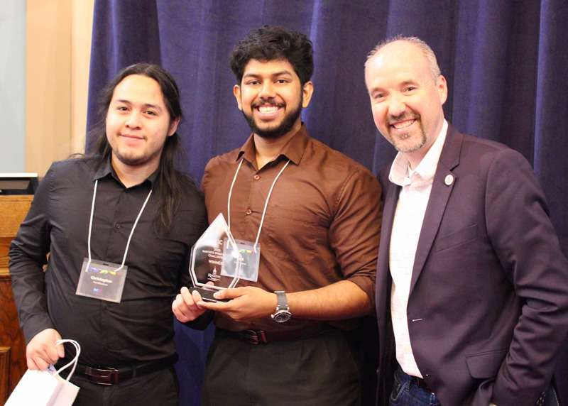

The problem
Handfluence explored more accessible communication between Deaf, DeafBlind, and hearing people. My focus was the vision component: converting signed spelling and gestures into text.
Applied machine learning / Accessibility
A bridge from signed gestures
to readable text.
An award-winning accessibility prototype. I built the real-time ASL recognition pipeline, from collecting gesture data to turning model predictions into English text.
Dunin–Deshpande Innovation Centre Prize
See it in action
The pipeline tracks hand landmarks over time, classifies the gesture, and stabilizes the output into readable text.
The recording shows live landmark tracking and a predicted gesture label, including an example of the sign for “name.”
01 / The short version
Handfluence explored more accessible communication between Deaf, DeafBlind, and hearing people. My focus was the vision component: converting signed spelling and gestures into text.
I collected a custom gesture dataset, trained an LSTM, and built the live OpenCV and MediaPipe pipeline. Debouncing and language post-processing made the predictions more usable.
A working real-time recognition prototype, with the model exported to ONNX for in-browser inference. Our team presented Handfluence at Kingston City Hall and won first place.
02 / Under the hood
Extract hand landmarks from live camera frames.
OpenCV + MediaPipe
Collect landmarks in a rolling 90-frame window.
Python + custom JSONL data
Classify the sequence with a custom-trained model.
TensorFlow + LSTM
Debounce unstable predictions and suggest word corrections.
NLP post-processing
Temporal context: The spelling model processes 90 frames of flattened x/y hand landmarks, roughly 1.5 seconds at the target 60 FPS capture rate. This lets it use movement as well as individual poses. I also experimented with full-word gesture recognition.
Usable output: A debounce layer suppresses unstable guesses during transitions. After a completion timeout, dictionary correction suggests likely words while letting the user preserve names and uncommon terms.
Scope: My contribution was the recognition pipeline. English-to-ASL avatars and speech-to-tactile signing were part of the broader team concept; this case study focuses on the computer vision work.
03 / Recognition & handoff
Our team presented Handfluence at the 2025 Mayor’s Innovation Challenge in Kingston, earning first place and the Dunin–Deshpande Innovation Centre Prize.
Built with Derek Youngman (Computer Science) and Emil Mathew (Mechatronics and Robotics Engineering).
I left the team in August 2025 before joining Cerio, and handed over the code. Emil continues the work through his startup, Perceivable Design Studios.
Read the Queen’s Computing coverage